Extending ggplot2
This vignette documents the official extension mechanism provided in ggplot2 2.0.0. This vignette is a high-level adjunct to the low-level details found in ?Stat, ?Geom and ?theme. You’ll learn how to extend ggplot2 by creating a new stat, geom, or theme.
As you read this document, you’ll see many things that will make you scratch your head and wonder why on earth is it designed this way? Mostly it’s historical accident - I wasn’t a terribly good R programmer when I started writing ggplot2 and I made a lot of questionable decisions. We cleaned up as many of those issues as possible in the 2.0.0 release, but some fixes simply weren’t worth the effort.
ggproto
All ggplot2 objects are built using the ggproto system of object oriented programming. This OO system is used only in one place: ggplot2. This is mostly historical accident: ggplot2 started off using proto because I needed mutable objects. This was well before the creation of (the briefly lived) mutatr, reference classes and R6: proto was the only game in town.
But why ggproto? Well when we turned to add an official extension mechanism to ggplot2, we found a major problem that caused problems when proto objects were extended in a different package (methods were evaluated in ggplot2, not the package where the extension was added). We tried converting to R6, but it was a poor fit for the needs of ggplot2. We could’ve modified proto, but that would’ve first involved understanding exactly how proto worked, and secondly making sure that the changes didn’t affect other users of proto.
It’s strange to say, but this is a case where inventing a new OO system was actually the right answer to the problem! Fortunately Winston is now very good at creating OO systems, so it only took him a day to come up with ggproto: it maintains all the features of proto that ggplot2 needs, while allowing cross package inheritance to work.
Here’s a quick demo of ggproto in action:
A <- ggproto("A", NULL,
x = 1,
inc = function(self) {
self$x <- self$x + 1
}
)
A$x
#> [1] 1
A$inc()
A$x
#> [1] 2
A$inc()
A$inc()
A$x
#> [1] 4The majority of ggplot2 classes are immutable and static: the methods neither use nor modify state in the class. They’re mostly used as a convenient way of bundling related methods together.
To create a new geom or stat, you will just create a new ggproto that inherits from Stat, Geom and override the methods described below.
Creating a new stat
The simplest stat
We’ll start by creating a very simple stat: one that gives the convex hull (the c hull) of a set of points. First we create a new ggproto object that inherits from Stat:
StatChull <- ggproto("StatChull", Stat,
compute_group = function(data, scales) {
data[chull(data$x, data$y), , drop = FALSE]
},
required_aes = c("x", "y")
)The two most important components are the compute_group() method (which does the computation), and the required_aes field, which lists which aesthetics must be present in order to for the stat to work.
Next we write a layer function. Unfortunately, due to an early design mistake I called these either stat_() or geom_(). A better decision would have been to call them layer_() functions: that’s a more accurate description because every layer involves a stat and a geom.
All layer functions follow the same form - you specify defaults in the function arguments and then call the layer() function, sending ... into the params argument. The arguments in ... will either be arguments for the geom (if you’re making a stat wrapper), arguments for the stat (if you’re making a geom wrapper), or aesthetics to be set. layer() takes care of teasing the different parameters apart and making sure they’re stored in the right place:
stat_chull <- function(mapping = NULL, data = NULL, geom = "polygon",
position = "identity", na.rm = FALSE, show.legend = NA,
inherit.aes = TRUE, ...) {
layer(
stat = StatChull, data = data, mapping = mapping, geom = geom,
position = position, show.legend = show.legend, inherit.aes = inherit.aes,
params = list(na.rm = na.rm, ...)
)
}(Note that if you’re writing this in your own package, you’ll either need to call ggplot2::layer() explicitly, or import the layer() function into your package namespace.)
Once we have a layer function we can try our new stat:
ggplot(mpg, aes(displ, hwy)) +
geom_point() +
stat_chull(fill = NA, colour = "black")
(We’ll see later how to change the defaults of the geom so that you don’t need to specify fill = NA every time.)
Once we’ve written this basic object, ggplot2 gives a lot for free. For example, ggplot2 automatically preserves aesthetics that are constant within each group:
ggplot(mpg, aes(displ, hwy, colour = drv)) +
geom_point() +
stat_chull(fill = NA)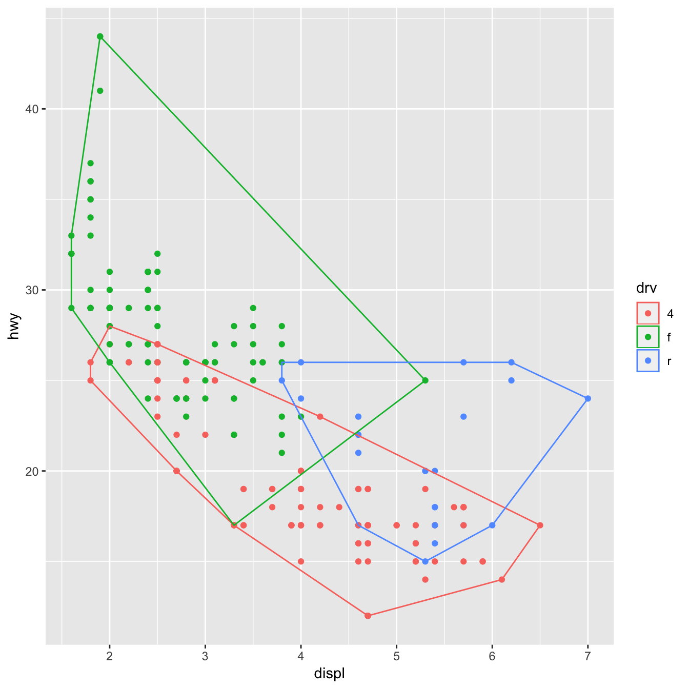
We can also override the default geom to display the convex hull in a different way:
ggplot(mpg, aes(displ, hwy)) +
stat_chull(geom = "point", size = 4, colour = "red") +
geom_point()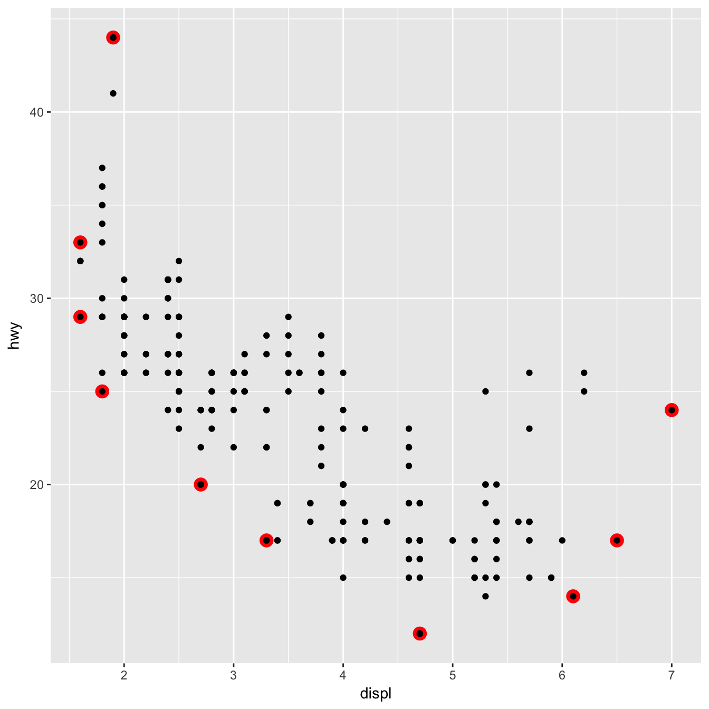
Stat parameters
A more complex stat will do some computation. Let’s implement a simple version of geom_smooth() that adds a line of best fit to a plot. We create a StatLm that inherits from Stat and a layer function, stat_lm():
StatLm <- ggproto("StatLm", Stat,
required_aes = c("x", "y"),
compute_group = function(data, scales) {
rng <- range(data$x, na.rm = TRUE)
grid <- data.frame(x = rng)
mod <- lm(y ~ x, data = data)
grid$y <- predict(mod, newdata = grid)
grid
}
)
stat_lm <- function(mapping = NULL, data = NULL, geom = "line",
position = "identity", na.rm = FALSE, show.legend = NA,
inherit.aes = TRUE, ...) {
layer(
stat = StatLm, data = data, mapping = mapping, geom = geom,
position = position, show.legend = show.legend, inherit.aes = inherit.aes,
params = list(na.rm = na.rm, ...)
)
}
ggplot(mpg, aes(displ, hwy)) +
geom_point() +
stat_lm()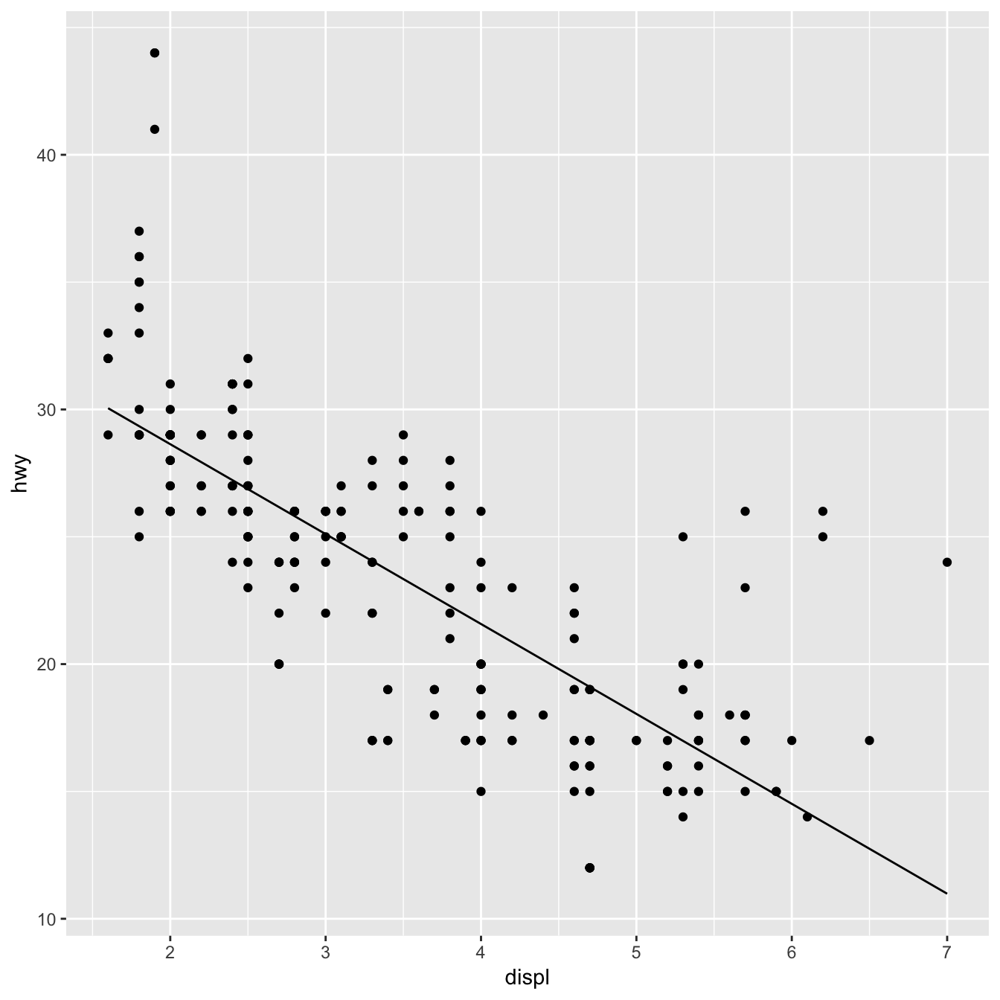
StatLm is inflexible because it has no parameters. We might want to allow the user to control the model formula and the number of points used to generate the grid. To do so, we add arguments to the compute_group() method and our wrapper function:
StatLm <- ggproto("StatLm", Stat,
required_aes = c("x", "y"),
compute_group = function(data, scales, params, n = 100, formula = y ~ x) {
rng <- range(data$x, na.rm = TRUE)
grid <- data.frame(x = seq(rng[1], rng[2], length = n))
mod <- lm(formula, data = data)
grid$y <- predict(mod, newdata = grid)
grid
}
)
stat_lm <- function(mapping = NULL, data = NULL, geom = "line",
position = "identity", na.rm = FALSE, show.legend = NA,
inherit.aes = TRUE, n = 50, formula = y ~ x,
...) {
layer(
stat = StatLm, data = data, mapping = mapping, geom = geom,
position = position, show.legend = show.legend, inherit.aes = inherit.aes,
params = list(n = n, formula = formula, na.rm = na.rm, ...)
)
}
ggplot(mpg, aes(displ, hwy)) +
geom_point() +
stat_lm(formula = y ~ poly(x, 10)) +
stat_lm(formula = y ~ poly(x, 10), geom = "point", colour = "red", n = 20)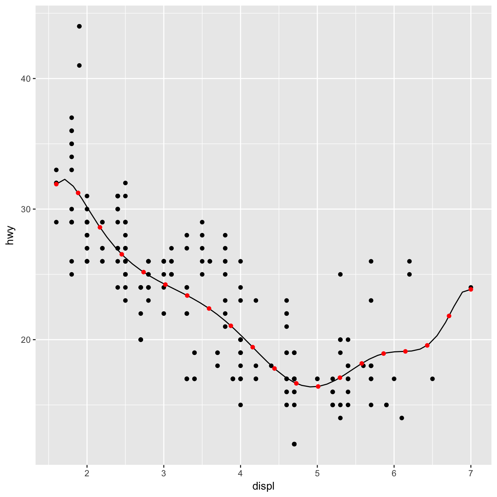
Note that we don’t have to explicitly include the new parameters in the arguments for the layer, ... will get passed to the right place anyway. But you’ll need to document them somewhere so the user knows about them. Here’s a brief example. Note @inheritParams ggplot2::stat_identity: that will automatically inherit documentation for all the parameters also defined for stat_identity().
#' @inheritParams ggplot2::stat_identity
#' @param formula The modelling formula passed to \code{lm}. Should only
#' involve \code{y} and \code{x}
#' @param n Number of points used for interpolation.
stat_lm <- function(mapping = NULL, data = NULL, geom = "line",
position = "identity", na.rm = FALSE, show.legend = NA,
inherit.aes = TRUE, n = 50, formula = y ~ x,
...) {
layer(
stat = StatLm, data = data, mapping = mapping, geom = geom,
position = position, show.legend = show.legend, inherit.aes = inherit.aes,
params = list(n = n, formula = formula, na.rm = na.rm, ...)
)
}Picking defaults
Sometimes you have calculations that should be performed once for the complete dataset, not once for each group. This is useful for picking sensible default values. For example, if we want to do a density estimate, it’s reasonable to pick one bandwidth for the whole plot. The following Stat creates a variation of the stat_density() that picks one bandwidth for all groups by choosing the mean of the “best” bandwidth for each group (I have no theoretical justification for this, but it doesn’t seem unreasonable).
To do this we override the setup_params() method. It’s passed the data and a list of params, and returns an updated list.
StatDensityCommon <- ggproto("StatDensityCommon", Stat,
required_aes = "x",
setup_params = function(data, params) {
if (!is.null(params$bandwidth))
return(params)
xs <- split(data$x, data$group)
bws <- vapply(xs, bw.nrd0, numeric(1))
bw <- mean(bws)
message("Picking bandwidth of ", signif(bw, 3))
params$bandwidth <- bw
params
},
compute_group = function(data, scales, bandwidth = 1) {
d <- density(data$x, bw = bandwidth)
data.frame(x = d$x, y = d$y)
}
)
stat_density_common <- function(mapping = NULL, data = NULL, geom = "line",
position = "identity", na.rm = FALSE, show.legend = NA,
inherit.aes = TRUE, bandwidth = NULL,
...) {
layer(
stat = StatDensityCommon, data = data, mapping = mapping, geom = geom,
position = position, show.legend = show.legend, inherit.aes = inherit.aes,
params = list(bandwidth = bandwidth, na.rm = na.rm, ...)
)
}
ggplot(mpg, aes(displ, colour = drv)) +
stat_density_common()
#> Picking bandwidth of 0.345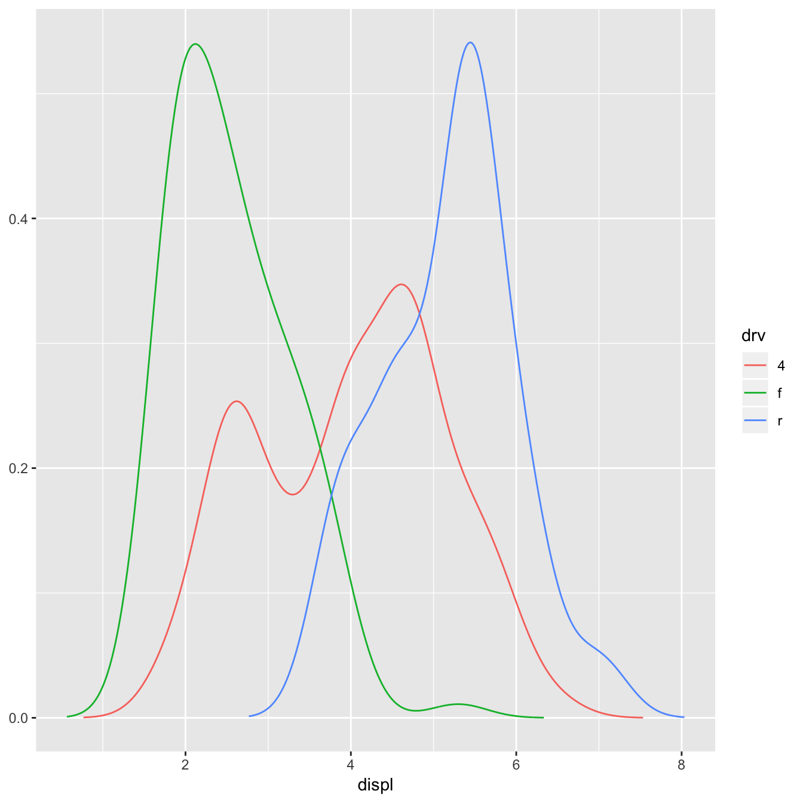
ggplot(mpg, aes(displ, colour = drv)) +
stat_density_common(bandwidth = 0.5)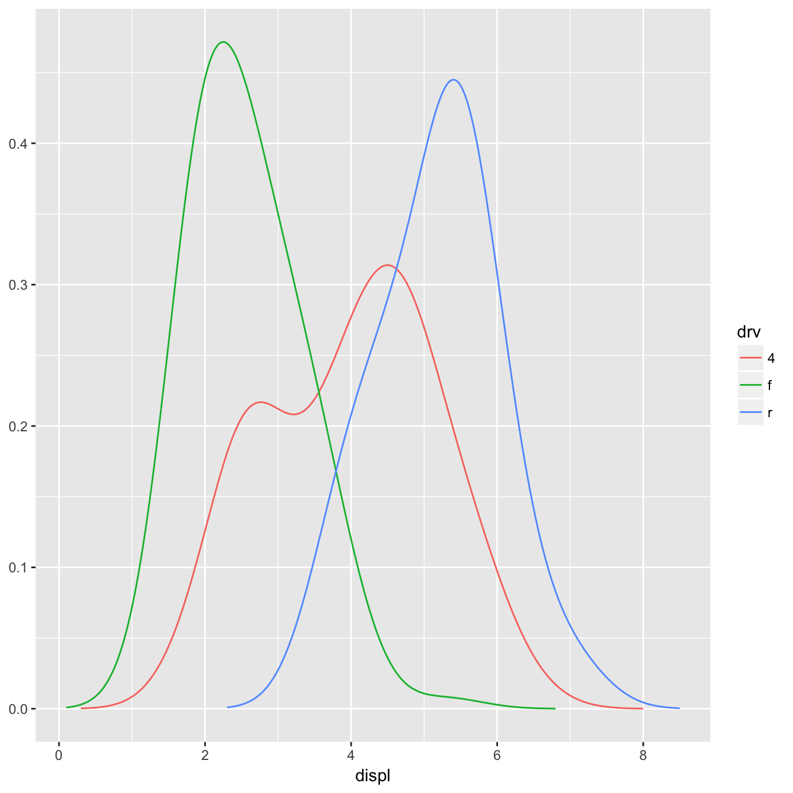
I recommend using NULL as a default value. If you pick important parameters automatically, it’s a good idea to message() to the user (and when printing a floating point parameter, using signif() to show only a few significant digits).
Variable names and default aesthetics
This stat illustrates another important point. If we want to make this stat usable with other geoms, we should return a variable called density instead of y. Then we can set up the default_aes to automatically map density to y, which allows the user to override it to use with different geoms:
StatDensityCommon <- ggproto("StatDensity2", Stat,
required_aes = "x",
default_aes = aes(y = ..density..),
compute_group = function(data, scales, bandwidth = 1) {
d <- density(data$x, bw = bandwidth)
data.frame(x = d$x, density = d$y)
}
)
ggplot(mpg, aes(displ, drv, colour = ..density..)) +
stat_density_common(bandwidth = 1, geom = "point")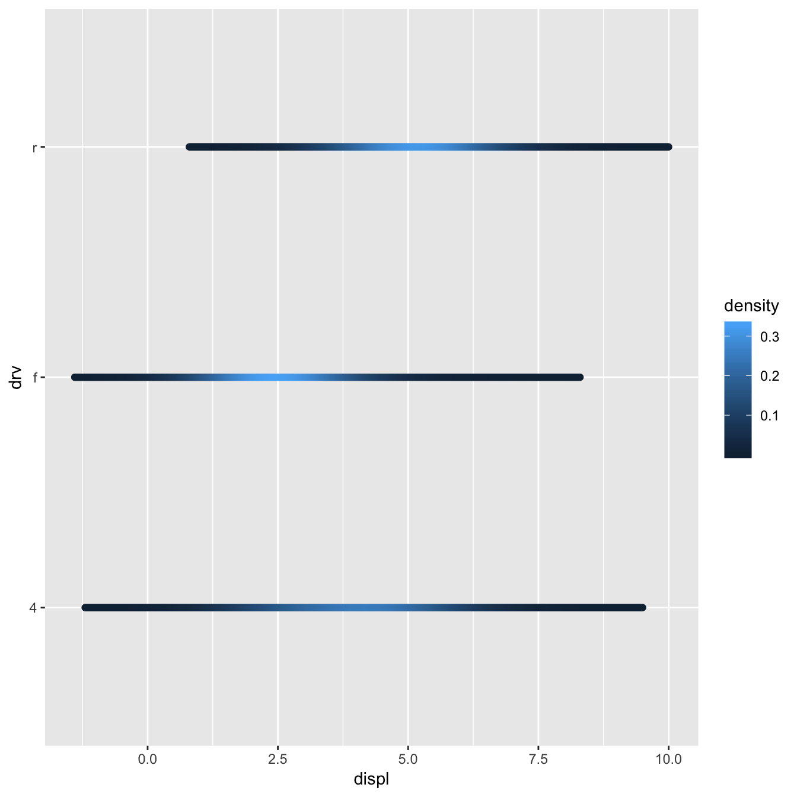
However, using this stat with the area geom doesn’t work quite right. The areas don’t stack on top of each other:
ggplot(mpg, aes(displ, fill = drv)) +
stat_density_common(bandwidth = 1, geom = "area", position = "stack")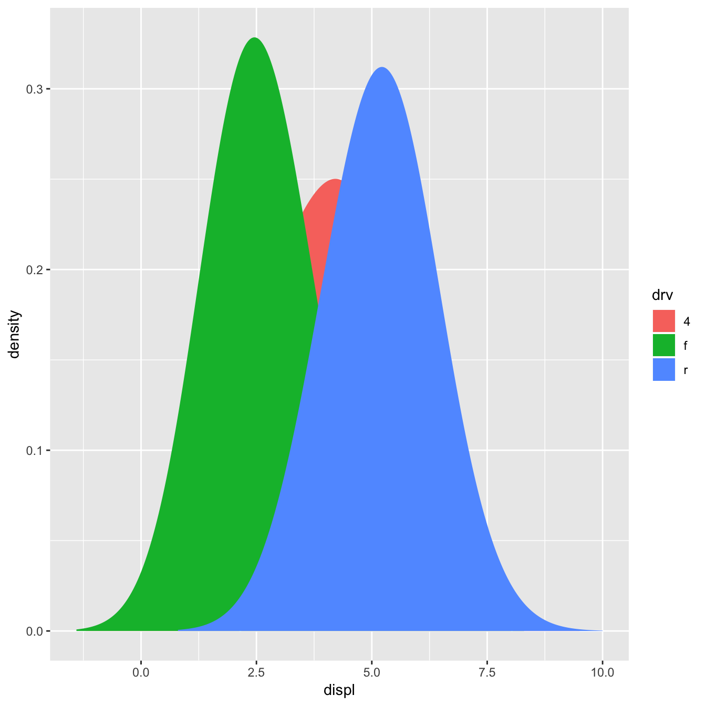
This is because each density is computed independently, and the estimated xs don’t line up. We can resolve that issue by computing the range of the data once in setup_params().
StatDensityCommon <- ggproto("StatDensityCommon", Stat,
required_aes = "x",
default_aes = aes(y = ..density..),
setup_params = function(data, params) {
min <- min(data$x) - 3 * params$bandwidth
max <- max(data$x) + 3 * params$bandwidth
list(
bandwidth = params$bandwidth,
min = min,
max = max,
na.rm = params$na.rm
)
},
compute_group = function(data, scales, min, max, bandwidth = 1) {
d <- density(data$x, bw = bandwidth, from = min, to = max)
data.frame(x = d$x, density = d$y)
}
)
ggplot(mpg, aes(displ, fill = drv)) +
stat_density_common(bandwidth = 1, geom = "area", position = "stack")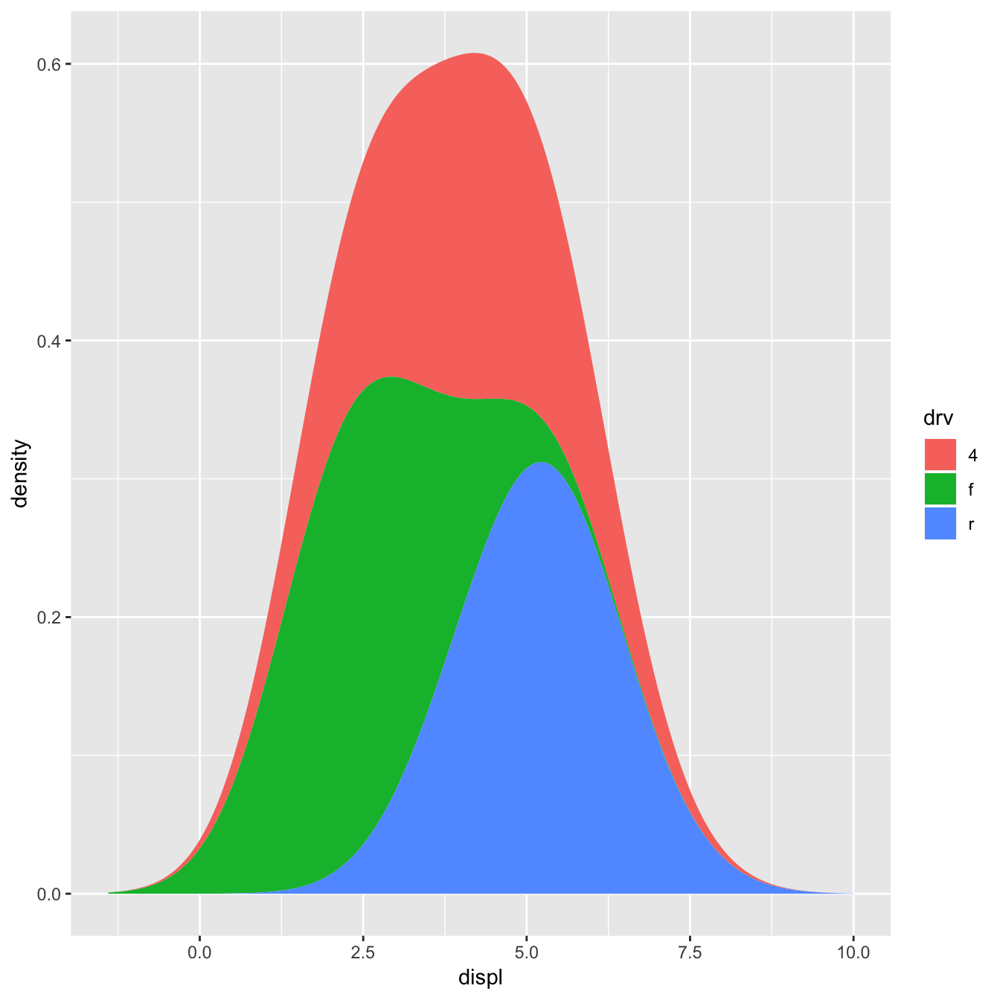
ggplot(mpg, aes(displ, drv, fill = ..density..)) +
stat_density_common(bandwidth = 1, geom = "raster")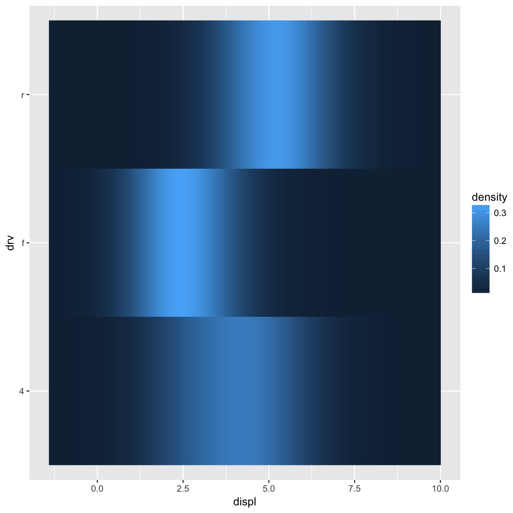
Exercises
Extend
stat_chullto compute the alpha hull, as from the alphahull package. Your new stat should take analphaargument.-
Modify the final version of
StatDensityCommonto allow the user to specify theminandmaxparameters. You’ll need to modify both the layer function and thecompute_group()method.Note: be careful when adding parameters to a layer function. The following names col, color, pch, cex, lty, lwd, srt, adj, bg, fg, min, and max are intentionally renamed to accomodate base graphical parameter names. For example, a value passed as min to a layer appears as ymin in the
setup_paramslist of params. It is recommended you avoid using these names for layer parameters. Compare and contrast
StatLmtoggplot2::StatSmooth. What key differences makeStatSmoothmore complex thanStatLm?
Creating a new geom
It’s harder to create a new geom than a new stat because you also need to know some grid. ggplot2 is built on top of grid, so you’ll need to know the basics of drawing with grid. If you’re serious about adding a new geom, I’d recommend buying R graphics by Paul Murrell. It tells you everything you need to know about drawing with grid.
A simple geom
It’s easiest to start with a simple example. The code below is a simplified version of geom_point():
GeomSimplePoint <- ggproto("GeomSimplePoint", Geom,
required_aes = c("x", "y"),
default_aes = aes(shape = 19, colour = "black"),
draw_key = draw_key_point,
draw_panel = function(data, panel_params, coord) {
coords <- coord$transform(data, panel_params)
grid::pointsGrob(
coords$x, coords$y,
pch = coords$shape,
gp = grid::gpar(col = coords$colour)
)
}
)
geom_simple_point <- function(mapping = NULL, data = NULL, stat = "identity",
position = "identity", na.rm = FALSE, show.legend = NA,
inherit.aes = TRUE, ...) {
layer(
geom = GeomSimplePoint, mapping = mapping, data = data, stat = stat,
position = position, show.legend = show.legend, inherit.aes = inherit.aes,
params = list(na.rm = na.rm, ...)
)
}
ggplot(mpg, aes(displ, hwy)) +
geom_simple_point()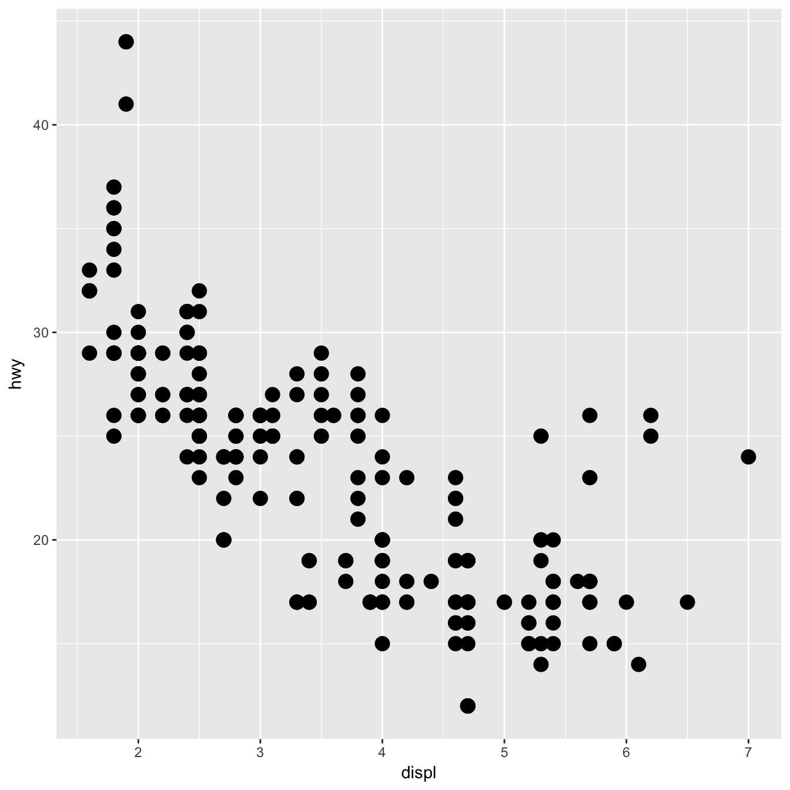
This is very similar to defining a new stat. You always need to provide fields/methods for the four pieces shown above:
required_aesis a character vector which lists all the aesthetics that the user must provide.default_aeslists the aesthetics that have default values.draw_keyprovides the function used to draw the key in the legend. You can see a list of all the build in key functions in?draw_keydraw_panel()is where the magic happens. This function takes three arguments and returns a grid grob. It is called once for each panel. It’s the most complicated part and is described in more detail below.
draw_panel() has three arguments:
data: a data frame with one column for each aesthetic.panel_params: a list of per-panel parameters generated by the coord. You should consider this an opaque data structure: don’t look inside it, just pass along tocoordmethods.coord: an object describing the coordinate system.
You need to use panel_params and coord together to transform the data coords <- coord$transform(data, panel_params). This creates a data frame where position variables are scaled to the range 0–1. You then take this data and call a grid grob function. (Transforming for non-Cartesian coordinate systems is quite complex - you’re best off transforming your data to the form accepted by an existing ggplot2 geom and passing it.)
Collective geoms
Overriding draw_panel() is most appropriate if there is one graphic element per row. In other cases, you want graphic element per group. For example, take polygons: each row gives one vertex of a polygon. In this case, you should instead override draw_group().
The following code makes a simplified version of GeomPolygon:
GeomSimplePolygon <- ggproto("GeomPolygon", Geom,
required_aes = c("x", "y"),
default_aes = aes(
colour = NA, fill = "grey20", size = 0.5,
linetype = 1, alpha = 1
),
draw_key = draw_key_polygon,
draw_group = function(data, panel_params, coord) {
n <- nrow(data)
if (n <= 2) return(grid::nullGrob())
coords <- coord$transform(data, panel_params)
# A polygon can only have a single colour, fill, etc, so take from first row
first_row <- coords[1, , drop = FALSE]
grid::polygonGrob(
coords$x, coords$y,
default.units = "native",
gp = grid::gpar(
col = first_row$colour,
fill = scales::alpha(first_row$fill, first_row$alpha),
lwd = first_row$size * .pt,
lty = first_row$linetype
)
)
}
)
geom_simple_polygon <- function(mapping = NULL, data = NULL, stat = "chull",
position = "identity", na.rm = FALSE, show.legend = NA,
inherit.aes = TRUE, ...) {
layer(
geom = GeomSimplePolygon, mapping = mapping, data = data, stat = stat,
position = position, show.legend = show.legend, inherit.aes = inherit.aes,
params = list(na.rm = na.rm, ...)
)
}
ggplot(mpg, aes(displ, hwy)) +
geom_point() +
geom_simple_polygon(aes(colour = class), fill = NA)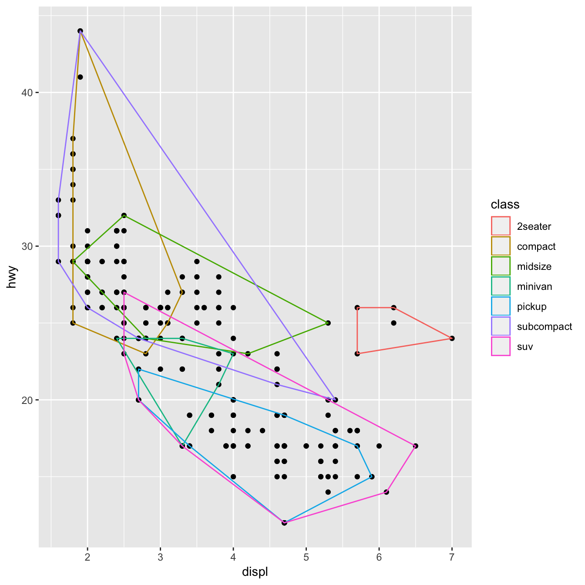
There are a few things to note here:
We override
draw_group()instead ofdraw_panel()because we want one polygon per group, not one polygon per row.If the data contains two or fewer points, there’s no point trying to draw a polygon, so we return a
nullGrob(). This is the graphical equivalent ofNULL: it’s a grob that doesn’t draw anything and doesn’t take up any space.Note the units:
xandyshould always be drawn in “native” units. (The default units forpointGrob()is a native, so we didn’t need to change it there).lwdis measured in points, but ggplot2 uses mm, so we need to multiply it by the adjustment factor.pt.
You might want to compare this to the real GeomPolygon. You’ll see it overrides draw_panel() because it uses some tricks to make polygonGrob() produce multiple polygons in one call. This is considerably more complicated, but gives better performance.
Inheriting from an existing Geom
Sometimes you just want to make a small modification to an existing geom. In this case, rather than inheriting from Geom you can inherit from an existing subclass. For example, we might want to change the defaults for GeomPolygon to work better with StatChull:
GeomPolygonHollow <- ggproto("GeomPolygonHollow", GeomPolygon,
default_aes = aes(colour = "black", fill = NA, size = 0.5, linetype = 1,
alpha = NA)
)
geom_chull <- function(mapping = NULL, data = NULL,
position = "identity", na.rm = FALSE, show.legend = NA,
inherit.aes = TRUE, ...) {
layer(
stat = StatChull, geom = GeomPolygonHollow, data = data, mapping = mapping,
position = position, show.legend = show.legend, inherit.aes = inherit.aes,
params = list(na.rm = na.rm, ...)
)
}
ggplot(mpg, aes(displ, hwy)) +
geom_point() +
geom_chull()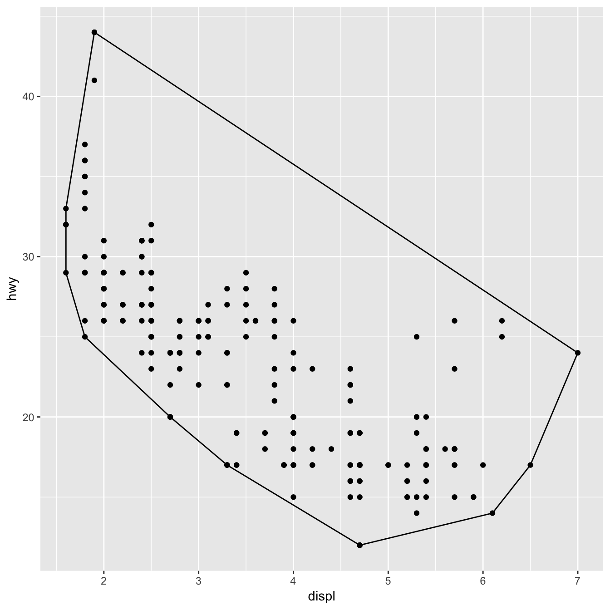
This doesn’t allow you to use different geoms with the stat, but that seems appropriate here since the convex hull is primarily a polygonal feature.
Creating your own theme
If you’re going to create your own complete theme, there are a few things you need to know:
- Overriding existing elements, rather than modifying them
- The four global elements that affect (almost) every other theme element
- Complete vs. incomplete elements
Overriding elements
By default, when you add a new theme element, it inherits values from the existing theme. For example, the following code sets the key colour to red, but it inherits the existing fill colour:
theme_grey()$legend.key
#> List of 5
#> $ fill : chr "grey95"
#> $ colour : chr "white"
#> $ size : NULL
#> $ linetype : NULL
#> $ inherit.blank: logi TRUE
#> - attr(*, "class")= chr [1:2] "element_rect" "element"
new_theme <- theme_grey() + theme(legend.key = element_rect(colour = "red"))
new_theme$legend.key
#> List of 5
#> $ fill : chr "grey95"
#> $ colour : chr "red"
#> $ size : NULL
#> $ linetype : NULL
#> $ inherit.blank: logi FALSE
#> - attr(*, "class")= chr [1:2] "element_rect" "element"To override it completely, use %+replace% instead of +:
new_theme <- theme_grey() %+replace% theme(legend.key = element_rect(colour = "red"))
new_theme$legend.key
#> List of 5
#> $ fill : NULL
#> $ colour : chr "red"
#> $ size : NULL
#> $ linetype : NULL
#> $ inherit.blank: logi FALSE
#> - attr(*, "class")= chr [1:2] "element_rect" "element"Global elements
There are four elements that affect the global appearance of the plot:
| Element | Theme function | Description |
|---|---|---|
| line | element_line() |
all line elements |
| rect | element_rect() |
all rectangular elements |
| text | element_text() |
all text |
| title | element_text() |
all text in title elements (plot, axes & legend) |
These set default properties that are inherited by more specific settings. These are most useful for setting an overall “background” colour and overall font settings (e.g. family and size).
df <- data.frame(x = 1:3, y = 1:3)
base <- ggplot(df, aes(x, y)) +
geom_point() +
theme_minimal()
base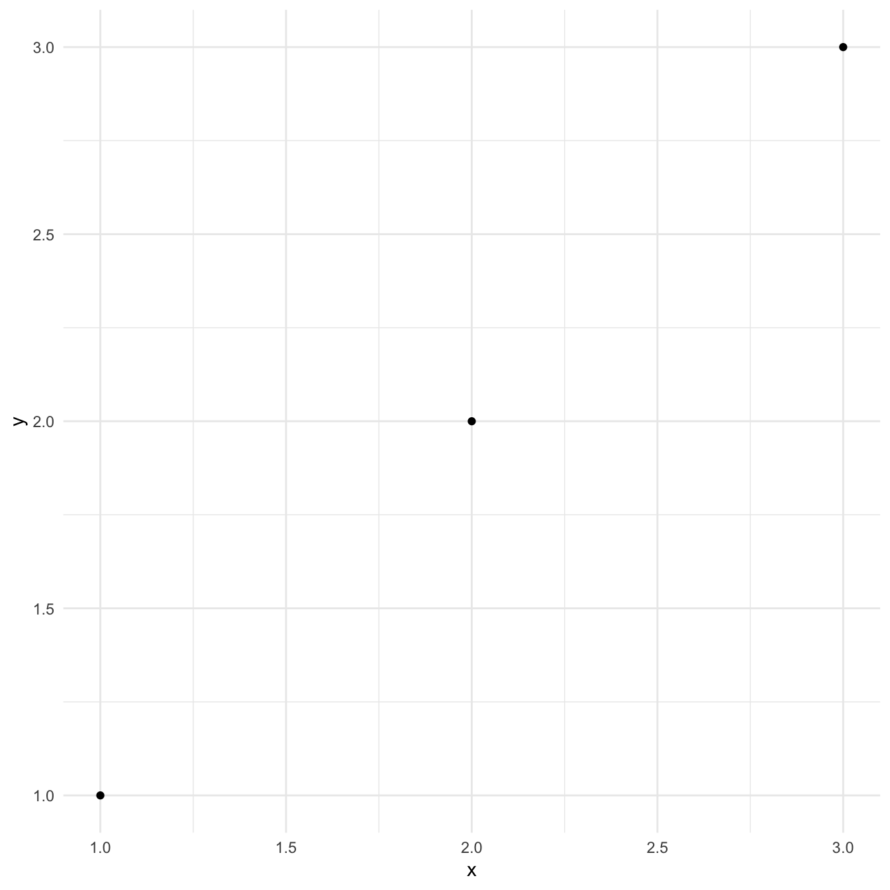
base + theme(text = element_text(colour = "red"))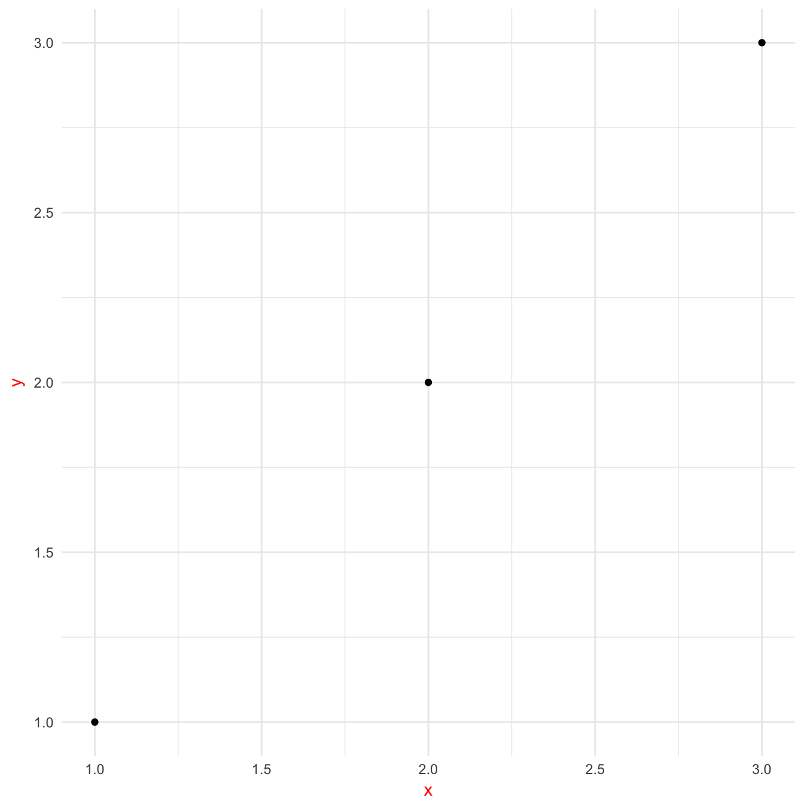
You should generally start creating a theme by modifying these values.
Complete vs incomplete
It is useful to understand the difference between complete and incomplete theme objects. A complete theme object is one produced by calling a theme function with the attribute complete = TRUE.
Theme functions theme_grey() and theme_bw() are examples of complete theme functions. Calls to theme() produce incomplete theme objects, since they represent (local) modifications to a theme object rather than returning a complete theme object per se. When adding an incomplete theme to a complete one, the result is a complete theme.
Complete and incomplete themes behave somewhat differently when added to a ggplot object:
Adding an incomplete theme augments the current theme object, replacing only those properties of elements defined in the call to
theme().Adding a complete theme wipes away the existing theme and applies the new theme.
Creating a new facetting
One of the more daunting exercises in ggplot2 extensions is to create a new facetting system. The reason for this is that when creating new facettings you take on the responsibility of how (almost) everything is drawn on the screen, and many do not have experience with directly using gtable and grid upon which the ggplot2 rendering is build. If you decide to venture into facetting extensions, it is highly recommended to gain proficiency with the above-mentioned packages.
The Facet class in ggplot2 is very powerful as it takes on responsibility of a wide range of tasks. The main tasks of a Facet object are:
Define a layout; that is, a partitioning of the data into different plot areas (panels) as well as which panels share position scales.
Map plot data into the correct panels, potentially duplicating data if it should exist in multiple panels (e.g. margins in
facet_grid()).Assemble all panels into a final gtable, adding axes, strips and decorations in the process.
Apart from these three tasks, for which functionality must be implemented, there are a couple of additional extension points where sensible defaults have been provided. These can generally be ignored, but adventurous developers can override them for even more control:
Initialization and training of positional scales for each panel.
Decoration in front of and behind each panel.
Drawing of axis labels
To show how a new facetting class is created we will start simple and go through each of the required methods in turn to build up facet_duplicate() that simply duplicate our plot into two panels. After this we will tinker with it a bit to show some of the more powerful possibilities.
Creating a layout specification
A layout in the context of facets is a data.frame that defines a mapping between data and the panels it should reside in as well as which positional scales should be used. The output should at least contain the columns PANEL, SCALE_X, and SCALE_Y, but will often contain more to help assign data to the correct panel (facet_grid() will e.g. also return the facetting variables associated with each panel). Let’s make a function that defines a duplicate layout:
layout <- function(data, params) {
data.frame(PANEL = c(1L, 2L), SCALE_X = 1L, SCALE_Y = 1L)
}This is quite simple as the facetting should just define two panels irrespectively of the input data and parameters.
Mapping data into panels
In order for ggplot2 to know which data should go where it needs the data to be assigned to a panel. The purpose of the mapping step is to assign a PANEL column to the layer data identifying which panel it belongs to.
mapping <- function(data, layout, params) {
if (plyr::empty(data)) {
return(cbind(data, PANEL = integer(0)))
}
rbind(
cbind(data, PANEL = 1L),
cbind(data, PANEL = 2L)
)
}here we first investigate whether we have gotten an empty data.frame and if not we duplicate the data and assign the original data to the first panel and the new data to the second panel.
Laying out the panels
While the two functions above have been deceivingly simple, this last one is going to take some more work. Our goal is to draw two panels beside (or above) each other with axes etc.
render <- function(panels, layout, x_scales, y_scales, ranges, coord, data,
theme, params) {
# Place panels according to settings
if (params$horizontal) {
# Put panels in matrix and convert to a gtable
panels <- matrix(panels, ncol = 2)
panel_table <- gtable::gtable_matrix("layout", panels,
widths = unit(c(1, 1), "null"), heights = unit(1, "null"), clip = "on")
# Add spacing according to theme
panel_spacing <- if (is.null(theme$panel.spacing.x)) {
theme$panel.spacing
} else {
theme$panel.spacing.x
}
panel_table <- gtable::gtable_add_col_space(panel_table, panel_spacing)
} else {
panels <- matrix(panels, ncol = 1)
panel_table <- gtable::gtable_matrix("layout", panels,
widths = unit(1, "null"), heights = unit(c(1, 1), "null"), clip = "on")
panel_spacing <- if (is.null(theme$panel.spacing.y)) {
theme$panel.spacing
} else {
theme$panel.spacing.y
}
panel_table <- gtable::gtable_add_row_space(panel_table, panel_spacing)
}
# Name panel grobs so they can be found later
panel_table$layout$name <- paste0("panel-", c(1, 2))
# Construct the axes
axes <- render_axes(ranges[1], ranges[1], coord, theme,
transpose = TRUE)
# Add axes around each panel
panel_pos_h <- panel_cols(panel_table)$l
panel_pos_v <- panel_rows(panel_table)$t
axis_width_l <- unit(grid::convertWidth(
grid::grobWidth(axes$y$left[[1]]), "cm", TRUE), "cm")
axis_width_r <- unit(grid::convertWidth(
grid::grobWidth(axes$y$right[[1]]), "cm", TRUE), "cm")
## We do it reverse so we don't change the position of panels when we add axes
for (i in rev(panel_pos_h)) {
panel_table <- gtable::gtable_add_cols(panel_table, axis_width_r, i)
panel_table <- gtable::gtable_add_grob(panel_table,
rep(axes$y$right, length(panel_pos_v)), t = panel_pos_v, l = i + 1,
clip = "off")
panel_table <- gtable::gtable_add_cols(panel_table, axis_width_l, i - 1)
panel_table <- gtable::gtable_add_grob(panel_table,
rep(axes$y$left, length(panel_pos_v)), t = panel_pos_v, l = i,
clip = "off")
}
## Recalculate as gtable has changed
panel_pos_h <- panel_cols(panel_table)$l
panel_pos_v <- panel_rows(panel_table)$t
axis_height_t <- unit(grid::convertHeight(
grid::grobHeight(axes$x$top[[1]]), "cm", TRUE), "cm")
axis_height_b <- unit(grid::convertHeight(
grid::grobHeight(axes$x$bottom[[1]]), "cm", TRUE), "cm")
for (i in rev(panel_pos_v)) {
panel_table <- gtable::gtable_add_rows(panel_table, axis_height_b, i)
panel_table <- gtable::gtable_add_grob(panel_table,
rep(axes$x$bottom, length(panel_pos_h)), t = i + 1, l = panel_pos_h,
clip = "off")
panel_table <- gtable::gtable_add_rows(panel_table, axis_height_t, i - 1)
panel_table <- gtable::gtable_add_grob(panel_table,
rep(axes$x$top, length(panel_pos_h)), t = i, l = panel_pos_h,
clip = "off")
}
panel_table
}Assembling the Facet class
Usually all methods are defined within the class definition in the same way as is done for Geom and Stat. Here we have split it out so we could go through each in turn. All that remains is to assign our functions to the correct methods as well as making a constructor
# Constructor: shrink is required to govern whether scales are trained on
# Stat-transformed data or not.
facet_duplicate <- function(horizontal = TRUE, shrink = TRUE) {
ggproto(NULL, FacetDuplicate,
shrink = shrink,
params = list(
horizontal = horizontal
)
)
}
FacetDuplicate <- ggproto("FacetDuplicate", Facet,
compute_layout = layout,
map_data = mapping,
draw_panels = render
)Now with everything assembled, lets test it out:
p <- ggplot(mtcars, aes(x = hp, y = mpg)) + geom_point()
p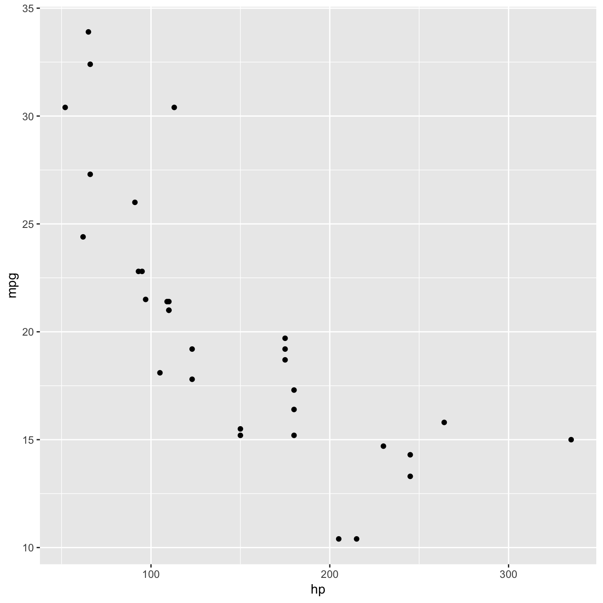
p + facet_duplicate()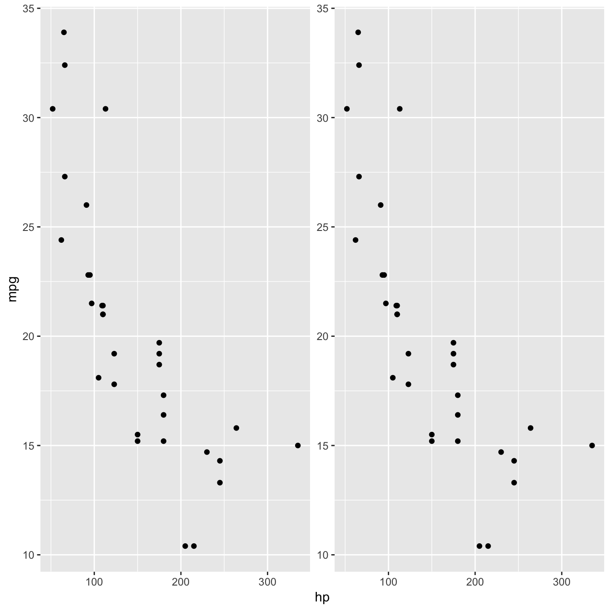
Doing more with facets
The example above was pretty useless and we’ll now try to expand on it to add some actual usability. We are going to make a facetting that adds panels with y-transformed axes:
library(scales)
facet_trans <- function(trans, horizontal = TRUE, shrink = TRUE) {
ggproto(NULL, FacetTrans,
shrink = shrink,
params = list(
trans = scales::as.trans(trans),
horizontal = horizontal
)
)
}
FacetTrans <- ggproto("FacetTrans", Facet,
# Almost as before but we want different y-scales for each panel
compute_layout = function(data, params) {
data.frame(PANEL = c(1L, 2L), SCALE_X = 1L, SCALE_Y = c(1L, 2L))
},
# Same as before
map_data = function(data, layout, params) {
if (plyr::empty(data)) {
return(cbind(data, PANEL = integer(0)))
}
rbind(
cbind(data, PANEL = 1L),
cbind(data, PANEL = 2L)
)
},
# This is new. We create a new scale with the defined transformation
init_scales = function(layout, x_scale = NULL, y_scale = NULL, params) {
scales <- list()
if (!is.null(x_scale)) {
scales$x <- plyr::rlply(max(layout$SCALE_X), x_scale$clone())
}
if (!is.null(y_scale)) {
y_scale_orig <- y_scale$clone()
y_scale_new <- y_scale$clone()
y_scale_new$trans <- params$trans
# Make sure that oob values are kept
y_scale_new$oob <- function(x, ...) x
scales$y <- list(y_scale_orig, y_scale_new)
}
scales
},
# We must make sure that the second scale is trained on transformed data
train_scales = function(x_scales, y_scales, layout, data, params) {
# Transform data for second panel prior to scale training
if (!is.null(y_scales)) {
data <- lapply(data, function(layer_data) {
match_id <- match(layer_data$PANEL, layout$PANEL)
y_vars <- intersect(y_scales[[1]]$aesthetics, names(layer_data))
trans_scale <- layer_data$PANEL == 2L
for (i in y_vars) {
layer_data[trans_scale, i] <- y_scales[[2]]$transform(layer_data[trans_scale, i])
}
layer_data
})
}
Facet$train_scales(x_scales, y_scales, layout, data, params)
},
# this is where we actually modify the data. It cannot be done in $map_data as that function
# doesn't have access to the scales
finish_data = function(data, layout, x_scales, y_scales, params) {
match_id <- match(data$PANEL, layout$PANEL)
y_vars <- intersect(y_scales[[1]]$aesthetics, names(data))
trans_scale <- data$PANEL == 2L
for (i in y_vars) {
data[trans_scale, i] <- y_scales[[2]]$transform(data[trans_scale, i])
}
data
},
# A few changes from before to accommodate that axes are now not duplicate of each other
# We also add a panel strip to annotate the different panels
draw_panels = function(panels, layout, x_scales, y_scales, ranges, coord,
data, theme, params) {
# Place panels according to settings
if (params$horizontal) {
# Put panels in matrix and convert to a gtable
panels <- matrix(panels, ncol = 2)
panel_table <- gtable::gtable_matrix("layout", panels,
widths = unit(c(1, 1), "null"), heights = unit(1, "null"), clip = "on")
# Add spacing according to theme
panel_spacing <- if (is.null(theme$panel.spacing.x)) {
theme$panel.spacing
} else {
theme$panel.spacing.x
}
panel_table <- gtable::gtable_add_col_space(panel_table, panel_spacing)
} else {
panels <- matrix(panels, ncol = 1)
panel_table <- gtable::gtable_matrix("layout", panels,
widths = unit(1, "null"), heights = unit(c(1, 1), "null"), clip = "on")
panel_spacing <- if (is.null(theme$panel.spacing.y)) {
theme$panel.spacing
} else {
theme$panel.spacing.y
}
panel_table <- gtable::gtable_add_row_space(panel_table, panel_spacing)
}
# Name panel grobs so they can be found later
panel_table$layout$name <- paste0("panel-", c(1, 2))
# Construct the axes
axes <- render_axes(ranges[1], ranges, coord, theme,
transpose = TRUE)
# Add axes around each panel
grobWidths <- function(x) {
unit(vapply(x, function(x) {
grid::convertWidth(
grid::grobWidth(x), "cm", TRUE)
}, numeric(1)), "cm")
}
panel_pos_h <- panel_cols(panel_table)$l
panel_pos_v <- panel_rows(panel_table)$t
axis_width_l <- grobWidths(axes$y$left)
axis_width_r <- grobWidths(axes$y$right)
## We do it reverse so we don't change the position of panels when we add axes
for (i in rev(seq_along(panel_pos_h))) {
panel_table <- gtable::gtable_add_cols(panel_table, axis_width_r[i], panel_pos_h[i])
if (params$horizontal) {
panel_table <- gtable::gtable_add_grob(panel_table,
rep(axes$y$right[i], length(panel_pos_v)), t = panel_pos_v, l = panel_pos_h[i] + 1,
clip = "off")
} else {
panel_table <- gtable::gtable_add_grob(panel_table,
rep(axes$y$right, length(panel_pos_v)), t = panel_pos_v, l = panel_pos_h[i] + 1,
clip = "off")
}
panel_table <- gtable::gtable_add_cols(panel_table, axis_width_l[i], panel_pos_h[i] - 1)
if (params$horizontal) {
panel_table <- gtable::gtable_add_grob(panel_table,
rep(axes$y$left[i], length(panel_pos_v)), t = panel_pos_v, l = panel_pos_h[i],
clip = "off")
} else {
panel_table <- gtable::gtable_add_grob(panel_table,
rep(axes$y$left, length(panel_pos_v)), t = panel_pos_v, l = panel_pos_h[i],
clip = "off")
}
}
## Recalculate as gtable has changed
panel_pos_h <- panel_cols(panel_table)$l
panel_pos_v <- panel_rows(panel_table)$t
axis_height_t <- unit(grid::convertHeight(
grid::grobHeight(axes$x$top[[1]]), "cm", TRUE), "cm")
axis_height_b <- unit(grid::convertHeight(
grid::grobHeight(axes$x$bottom[[1]]), "cm", TRUE), "cm")
for (i in rev(panel_pos_v)) {
panel_table <- gtable::gtable_add_rows(panel_table, axis_height_b, i)
panel_table <- gtable::gtable_add_grob(panel_table,
rep(axes$x$bottom, length(panel_pos_h)), t = i + 1, l = panel_pos_h,
clip = "off")
panel_table <- gtable::gtable_add_rows(panel_table, axis_height_t, i - 1)
panel_table <- gtable::gtable_add_grob(panel_table,
rep(axes$x$top, length(panel_pos_h)), t = i, l = panel_pos_h,
clip = "off")
}
# Add strips
strips <- render_strips(
x = data.frame(name = c("Original", paste0("Transformed (", params$trans$name, ")"))),
labeller = label_value, theme = theme)
panel_pos_h <- panel_cols(panel_table)$l
panel_pos_v <- panel_rows(panel_table)$t
strip_height <- unit(grid::convertHeight(
grid::grobHeight(strips$x$top[[1]]), "cm", TRUE), "cm")
for (i in rev(seq_along(panel_pos_v))) {
panel_table <- gtable::gtable_add_rows(panel_table, strip_height, panel_pos_v[i] - 1)
if (params$horizontal) {
panel_table <- gtable::gtable_add_grob(panel_table, strips$x$top,
t = panel_pos_v[i], l = panel_pos_h, clip = "off")
} else {
panel_table <- gtable::gtable_add_grob(panel_table, strips$x$top[i],
t = panel_pos_v[i], l = panel_pos_h, clip = "off")
}
}
panel_table
}
)As is very apparent, the draw_panel method can become very unwieldy once it begins to take multiple possibilities into account. The fact that we want to support both horizontal and vertical layout leads to a lot of if/else blocks in the above code. In general, this is the big challenge when writing facet extensions so be prepared to be very meticulous when writing these methods.
Enough talk - lets see if our new and powerful facetting extension works:
ggplot(mtcars, aes(x = hp, y = mpg)) + geom_point() + facet_trans('sqrt')
Extending existing facet function
As the rendering part of a facet class is often the difficult development step, it is possible to piggyback on the existing facetting classes to achieve a range of new facettings. Below we will subclass facet_wrap() to make a facet_bootstrap() class that splits the input data into a number of panels at random.
facet_bootstrap <- function(n = 9, prop = 0.2, nrow = NULL, ncol = NULL,
scales = "fixed", shrink = TRUE, strip.position = "top") {
facet <- facet_wrap(~.bootstrap, nrow = nrow, ncol = ncol, scales = scales,
shrink = shrink, strip.position = strip.position)
facet$params$n <- n
facet$params$prop <- prop
ggproto(NULL, FacetBootstrap,
shrink = shrink,
params = facet$params
)
}
FacetBootstrap <- ggproto("FacetBootstrap", FacetWrap,
compute_layout = function(data, params) {
id <- seq_len(params$n)
dims <- wrap_dims(params$n, params$nrow, params$ncol)
layout <- data.frame(PANEL = factor(id))
if (params$as.table) {
layout$ROW <- as.integer((id - 1L) %/% dims[2] + 1L)
} else {
layout$ROW <- as.integer(dims[1] - (id - 1L) %/% dims[2])
}
layout$COL <- as.integer((id - 1L) %% dims[2] + 1L)
layout <- layout[order(layout$PANEL), , drop = FALSE]
rownames(layout) <- NULL
# Add scale identification
layout$SCALE_X <- if (params$free$x) id else 1L
layout$SCALE_Y <- if (params$free$y) id else 1L
cbind(layout, .bootstrap = id)
},
map_data = function(data, layout, params) {
if (is.null(data) || nrow(data) == 0) {
return(cbind(data, PANEL = integer(0)))
}
n_samples <- round(nrow(data) * params$prop)
new_data <- lapply(seq_len(params$n), function(i) {
cbind(data[sample(nrow(data), n_samples), , drop = FALSE], PANEL = i)
})
do.call(rbind, new_data)
}
)
ggplot(diamonds, aes(carat, price)) +
geom_point(alpha = 0.1) +
facet_bootstrap(n = 9, prop = 0.05)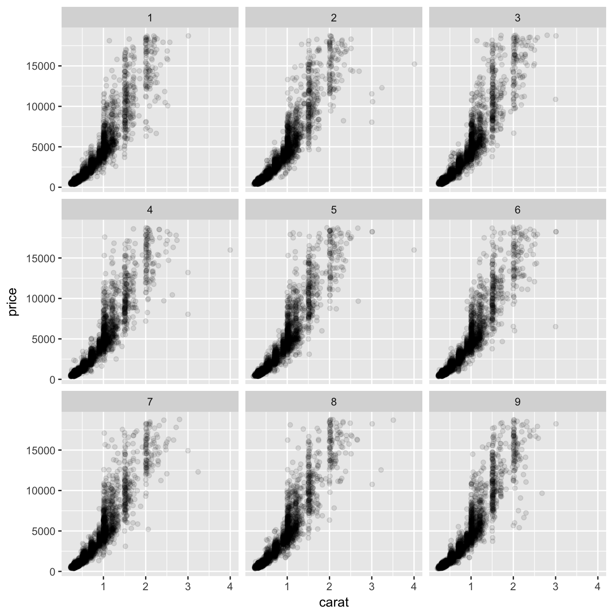
What we are doing above is to intercept the compute_layout and map_data methods and instead of dividing the data by a variable we randomly assigns rows to a panel based on the sampling parameters (n determines the number of panels, prop determines the proportion of data in each panel). It is important here that the layout returned by compute_layout is a valid layout for FacetWrap as we are counting on the draw_panel method from FacetWrap to do all the work for us. Thus if you want to subclass FacetWrap or FacetGrid, make sure you understand the nature of their layout specification.
Exercises
- Rewrite FacetTrans to take a vector of transformations and create an additional panel for each transformation.
- Based on the FacetWrap implementation rewrite FacetTrans to take the strip.placement theme setting into account.
- Think about which caveats there are in FacetBootstrap specifically related to adding multiple layers with the same data.